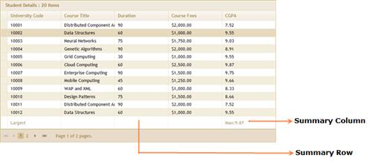

1. Create a model in the application (Refer to Getting Started>Adding a Model to the Application).
2. Create a strongly typed view (Refer to How to>Strongly Typed View).
3. Create the Grid control in the view and configure its properties.
4. Set the JSON action mode using the ActionMode method.
5. To enable grid summaries, use the AllowSummaries method.
|
View [ASPX]
<%=Html.Syncfusion().Grid<Order>("Grid1") .ActionMode(ActionMode.JSON) .Summaries(summary => { summary.AllowSummaries(true) .Add((IEnumerable<GridSummaryRowDescriptor>)ViewData["SummaryRowDescriptors"]);
}) columns.Add(p => p.OrderDate).Format("{0:dd-MM-yyyy}");
|
|
View [cshtml]
@{
Html.Syncfusion().Grid<Order>("Grid1") .ActionMode(ActionMode.JSON) .Summaries(summary => { summary.AllowSummaries(true) .Add((IEnumerable<GridSummaryRowDescriptor>)ViewData["SummaryRowDescriptors"]);
}) columns.Add(p => p.OrderDate).Format("{0:dd-MM-yyyy}"); }
|
6. Set up a SummaryColumn by instantiating GridSummaryColumnDescriptor specifying the SummaryType and format.
|
Controller // Create an instance to GridSummaryColumnDescriptor. GridSummaryColumnDescriptor maxCGPA = new GridSummaryColumnDescriptor(); maxCGPA.Name = "Maximum CGPA"; // Specify the name to summary column. maxCGPA.SummaryType = SummaryType.DoubleAggregate; // Specify the summary Type. maxCGPA.DataMember = "CGPA"; // Gets or sets the mapping for this column. maxCGPA.DisplayColumn= "CGPA"; //The target column at which to display the summary. maxCGPA.Format = "{Maximum:##.##}"; // The format string used to format the text to display in the summary column. |
7. Define a SummaryRow and add the SummaryColumn into it.
|
Controller GridSummaryRowDescriptor maxRow = new GridSummaryRowDescriptor("Largest"); /// Title displayed in the summary Row. maxRow.Title = "Largest"; /// Custom text which can be prefixed with the maxCGPA summary. maxCGPA.Prefix = "Max:"; /// Summary columns are added into the Summary row. maxRow.SummaryColumns.Add(maxCGPA); |
8. Finally, set the list of SummaryRowDescriptor to ViewData.
|
Controller ViewData[“SummaryRowDescriptors”] = this.SummaryCollection; |
9. Render the view.
|
Controller public ActionResult Index() { return View(); } |
10. If you enable the paging or sorting features, rebind the SummaryRow property again in a Post action as given below.
|
[AcceptVerbs(HttpVerbs.Post)] public ActionResult Index(PagingParams args) { IEnumerable data = new StudentDataContext().AutoFormatStudent.Skip(0).Take(20).ToList(); ActionResult result = data.GridJSONActions<Student>(); var engineSource = result as GridJSONActionResult<Student>; // Rebinding the SummaryRows. foreach (GridSummaryRowDescriptor summaryRow in this.SummaryCollection) engineSource.GridModel.SummaryRows.Add(summaryRow); return result; } |
11. Run the application. The grid will appear as shown below.

Figure 135: Summary-Enabled Grid